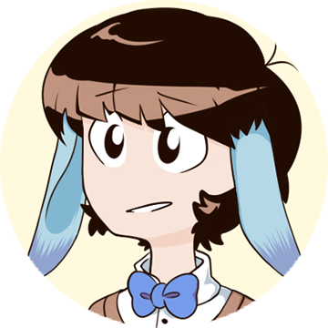

Next: Opening Spreads.

How can the icons of comics and architecture coalesce – in ink and type – to form a rich narrative which is both idiosyncratic and empathic?
If, at the end of your first ten or fifteen years of fighting and working and feeling, you find you’ve written one line of one poem, you’ll be very lucky indeed. — E. E. Cummings.
Through the research motivated by this thesis enquiry, I explore the relationship between architecture, comics, and psychological and religious personal representations. I seek to describe and support the notion that a precise and emotive sequential portrayal of architecture – a realisation of the symbol or icon, rendered in ink – can enhance and enrich the personal narrative motivated by that sequence, through an integrated process of precedent research, storytelling, and creative exploration and investigation.
At the core of the thesis is the comic Stellaris, which distills all of the techniques and reflections developed throughout the thesis creative research. Stellaris represents the culmination of this work in the form of a creative practice; it is the outcome – represented in architecture, ink, and icon – around which all other bodies of research in the thesis revolve. The generative act of writing a story which is individual and psychological comes first, and out of that deeply layered and inter-woven process emerges a second act through which formal ideas, techniques, and intentions are pieced together. Incorporated into my illustrative creative practice is a formal investigation of symbols across architecture, comics, psychology, and religion, demonstrated through the medium of comics and storytelling, both by architects making use of the form, and artists building tectonic environments into their sequential narratives.
Commentary
I was, on the whole, happy with how the abstract held up, but I felt I’d missed a couple of important concepts (such as “inter-weaving”), so I’ve added them in. My pull toward changing “I” to “we”, “my” to “our”, and so on hasn’t improved, and I found myself almost subconsciously making these amendments during the process of editing! I’ve never felt Cummings’ opening lines more keenly than I do after having completed the paper; we spent a year and a half on this personal thesis engagement, and yet I still feel like I have managed to convey very little of personal substance.
Next: Opening Spreads.